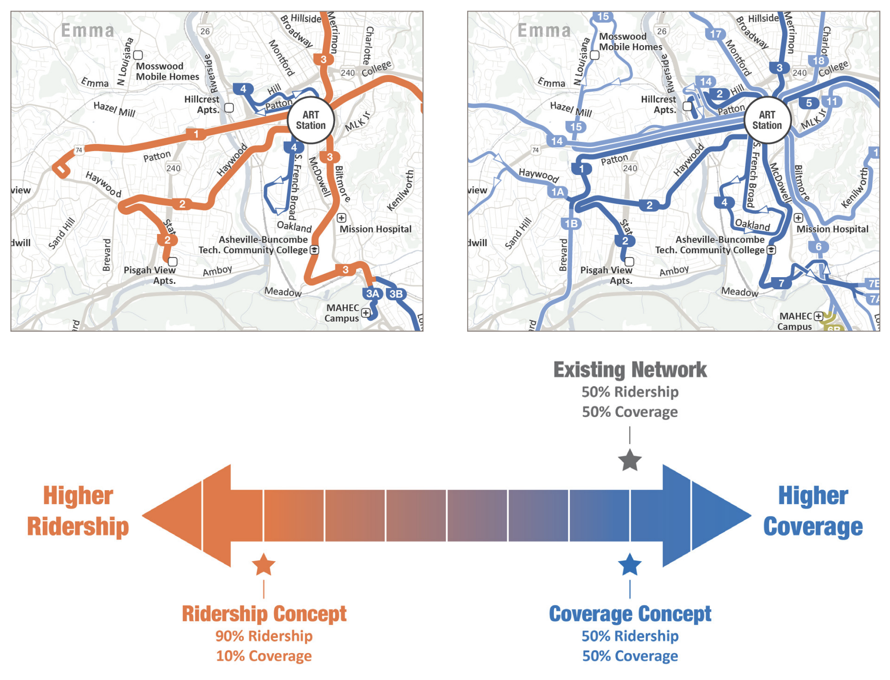
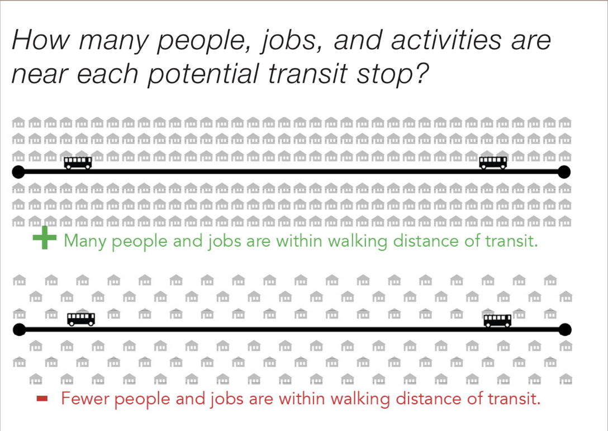
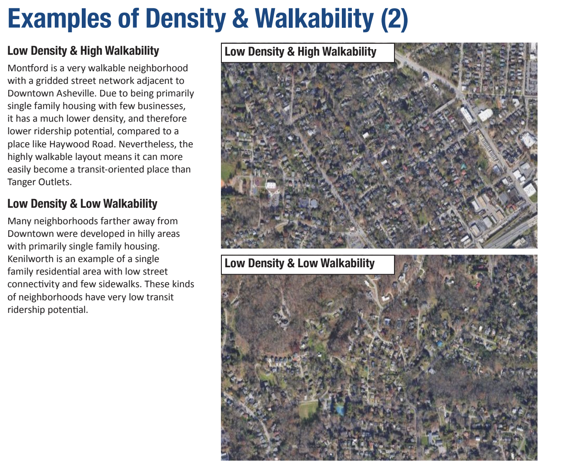
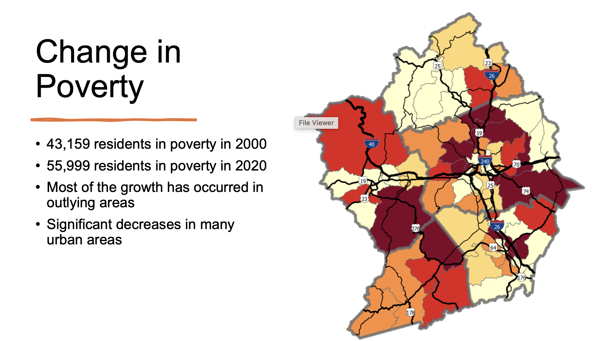
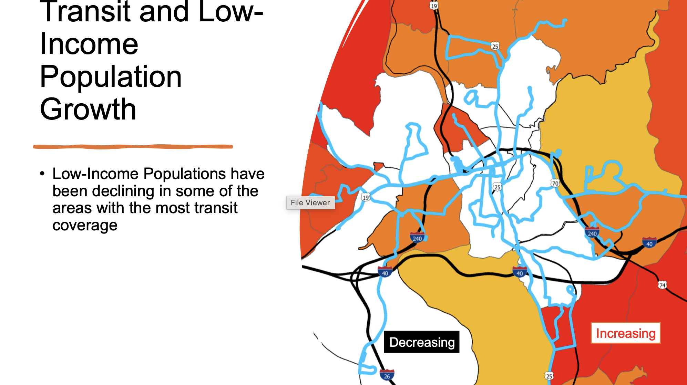

Buses Need Housing
March 11, 2026
This member commentary post does not necessarily reflect the views of Asheville For All or its members.
Last year, Asheville began a study of its bus system that, when boiled down, asks a simple question:
Do we want a sprawling bus network with lots of routes but low frequency? Or do we want a smaller selection of routes, if it means that resources can go to running those routes more frequently?
The study is called the “ART Comprehensive Operational Analysis.” It’s being carried out with the help of some nationally recognized experts on transit, and it is expected to finish up this summer. But if our friend at MountainTrue is correct, it sounds like the city is already leaning towards a revamp of the bus system’s schedules and routes to favor frequency over coverage.

I think this is great news. One core assumption of the Comprehensive Operational Analysis, or COA, is that trading coverage for frequency is going to increase “ridership” overall, and it seems to me that this should be a primary goal of any public transit system. In fact, the COA is so certain of this, that its reports name the frequency option as the “ridership model.”
But I think this news also has implications for how we think about housing outcomes in Asheville.
* * *
When I moved to Asheville more than a decade ago, I didn’t have a car. And so my housing search revolved mainly around the questions of “how will I get to work?” and “how will I get my groceries home?”
(The same questions animated my decisions prior to moving of course, which is why I lived in the beautiful, awesome neighborhood of East Lowry Hill in Minneapolis before coming here.)
I lived car-free in Asheville for a year, while I saved up some money. But in that year, unlike when I lived in Minneapolis (or even in Los Angeles!), I never once rode the bus. I just couldn’t wrap my head around going to the store, picking up some groceries, and then potentially sitting around for a half hour (or longer!) waiting for the next bus.
I just walked places, or got rides.
To be sure, I was fortunate back then to find an apartment that I could afford, where I could just walk downtown and to various stores and restaurants and services. With the rise in rents in our core neighborhoods, such options don’t really exist anymore for most working families and young people.
All of this is to say that our ability to get around and our ability to afford housing are deeply connected. Owning, operating, and maintaining cars is actually insanely expensive! And so housing affordability, at its broadest and biggest meaning, needs public transit.
* * *
But if housing affordability needs transit, it’s also true that transit needs housing. This is a point that the Comprehensive Operational Analysis, or COA, makes quite well.
Last summer’s COA presentation, dubbed “The Choices Report,” stresses the need for transit to be surrounded by some measure of density. More housing near stops means more potential riders.

Recently, a prominent and popular Ashevillean, an advocate for transit, expressed their implicit support for the frequency (or “ridership”) model on social media, by stating the choice as between “maintaining neighborhood coverage versus corridor frequency that’s meant to increase ridership” (the emphasis is mine). I thought this was a very strange choice of wording. But it matched their history of advocating for an increase in housing on corridors rather than allowing for the elimination of exclusionary single-family-home-only zoning from our residential neighborhoods.
As I noted a few months ago, this kind of thinking—what some analysts and activists have called “the grand bargain” of housing—has a dark side. Infill housing near transit doesn’t have to take the form of big apartment buildings, and it doesn’t have to be on main corridors at all.
Consider bus lines 2 or 3 on the image at the top of this page, in the mockup of what a slimmed down, frequency-focused map might look like. (These are the lines in orange.) More infill housing and more housing type diversity in East West Asheville, or Falconhurst, or Chestnut Hills, or Five Points, would all create more potential for increased transit ridership.
(Note too that the ridership model here is meant to be presented as one extreme end of the spectrum, and that the city is likely to choose a model that is somewhat more in the middle. We are likely, in other words, to see a bus continue down Haywood Road, past Brevard Rd., in West Asheville, for example.)
The COA agrees that infill housing in residential neighborhoods is important. Notice how in the following image, from page 35 of last summer’s report, the focus is on the entire residential street network, and not just the corridors:

The explanatory text in the image is quite explicit, in fact, that single-family homes are one factor for low ridership feasibility.
In short, what the COA is telling us is that if we want a successful transit system, we need to think about better land use, and that includes considering what our residential neighborhoods look like.
* * *
I hope I’ve made clear that I support changes to the current maps and schedules that will prioritize frequency and induce greater overall ridership.
Now, allow me to suggest a less-than-desirable scenario.
A recent presentation from the Director of the French Broad River MPO highlights an existing problem: the fastest growing census tracts in our region are those that are the most “car-dependent,” while Asheville’s urban core is losing population. At the same time, poorer populations—those that are likely to have fewer private transportation options—are being pushed further outside of Asheville’s core.

The following map shows clearly that even under present circumstances, low-income populations are having a harder time living near transit-rich neighborhoods or corridors.

If those blue lines in the above image represent transit coverage, what happens if the city chooses a frequency/ridership model, and fewer exist? Or if some of them shrink in length? If the city does not incentivize more housing in our core neighborhoods and along our core corridors while it pares down bus routes, what will be the end-result? A relatively greater scarcity in housing near transit lines than that which existed before.
So while I do believe that a ridership/frequency model is both necessary and desirable, it is also necessary to ensure that more housing, and more housing type diversity, is allowed in the core areas where transit coverage will remain. That means more infill on transit-supportive corridors, but it also means moving beyond the current exclusionary zoning of our neighborhoods too.
If we don’t, families that live in areas not served by the bus that want to be served by the bus—whether or not they were previously on a route that was pared back or eliminated—are less likely to be able to find a home that serves their transportation needs, as well as their housing needs.
This member commentary post does not necessarily reflect the views of Asheville For All or its members.